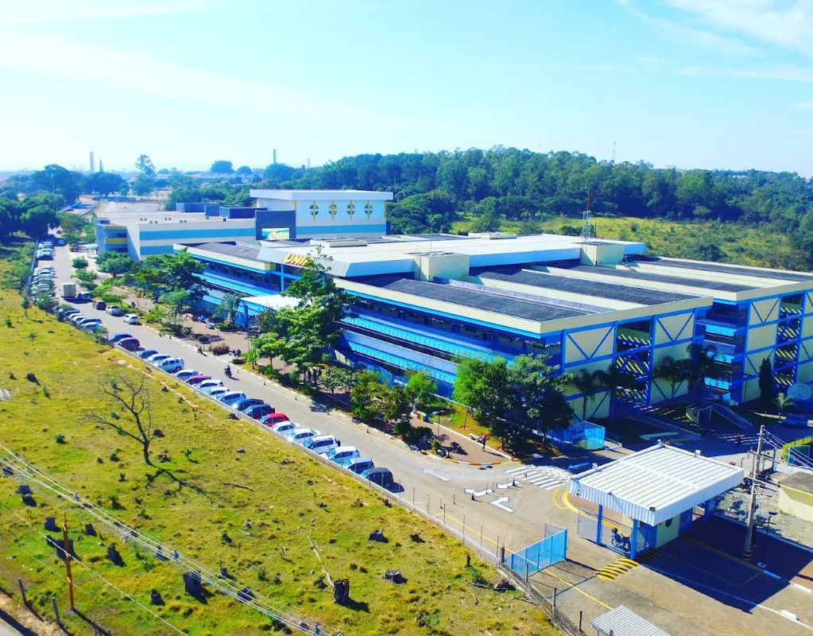
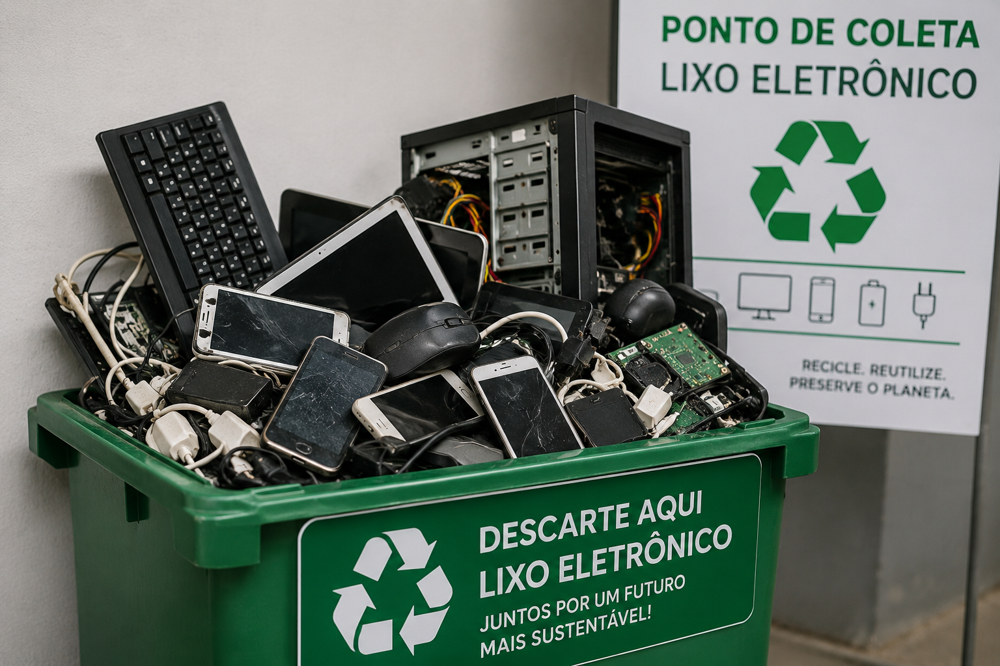
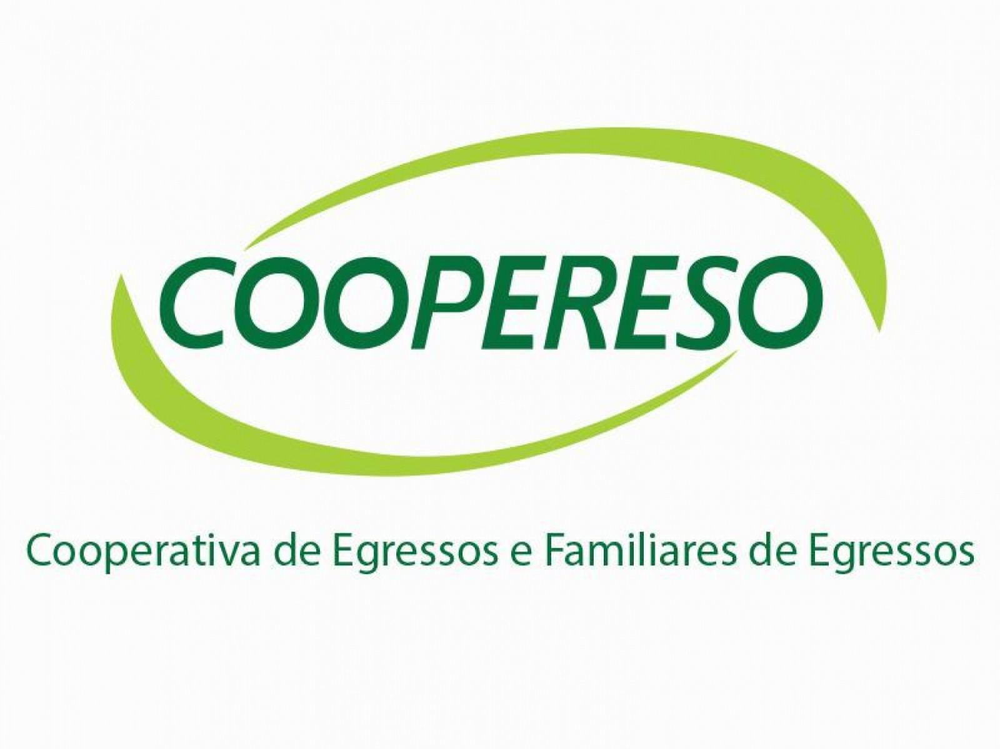
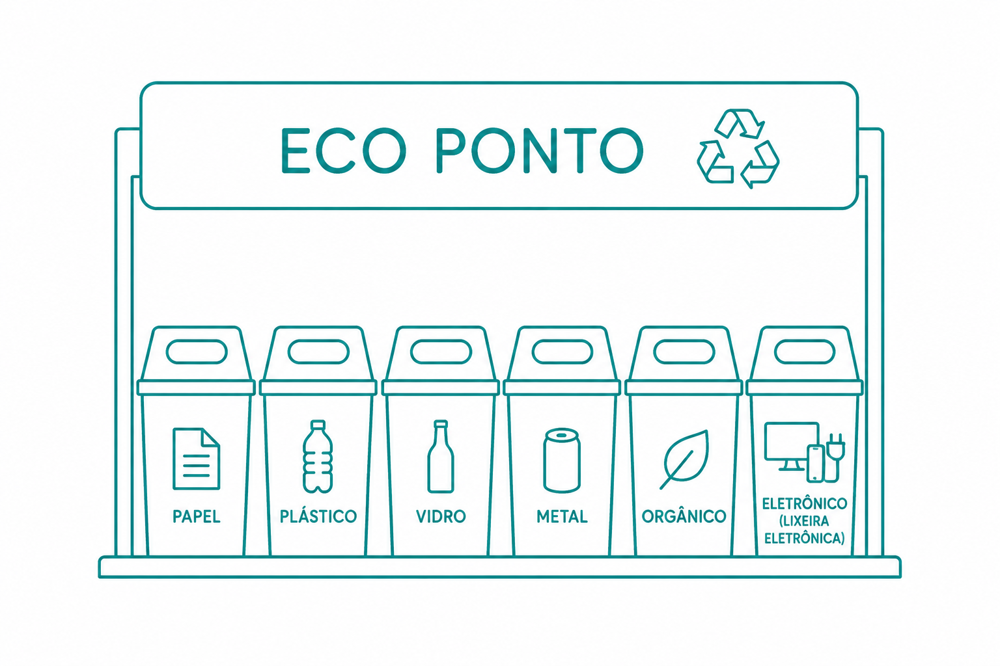

UniversidadeUNIP - Sorocaba
Avenida Independência, 210
Éden | Sorocaba - SP
Seg–Sex: 07h às 22h30

Encontre pontos de coleta em Sorocaba para descartar equipamentos eletrônicos de forma segura e sustentável. Pequenas ações ajudam a reduzir impactos ambientais e contribuem para um futuro melhor.

Escolha um dos pontos de coleta abaixo e descarte seus equipamentos de forma responsável.

Universidade
Avenida Independência, 210
Éden | Sorocaba - SP
Av. Armando Sales de Oliveira, 762
Vila Trujillo | Sorocaba - SP

Cooperativa
Rua Ourinhos, 241
Jardim Leocádia | Sorocaba - SP

Ecoponto
Rua Roque Sampaio, 100
Vila Helena | Sorocaba - SP
Celulares, carregadores, computadores, teclados, cabos, monitores, pilhas, baterias e outros equipamentos eletrônicos.
Nunca descarte eletrônicos no lixo comum. Muitos componentes podem contaminar o solo e a água.